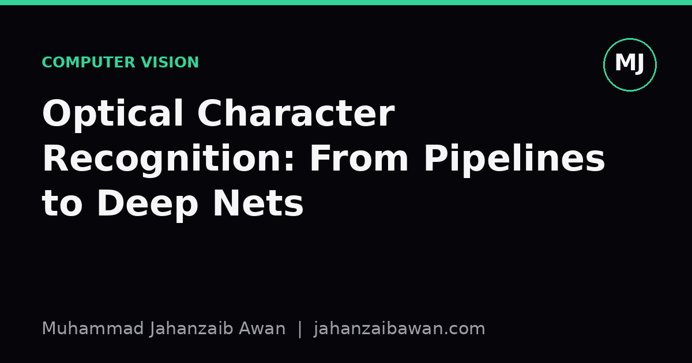
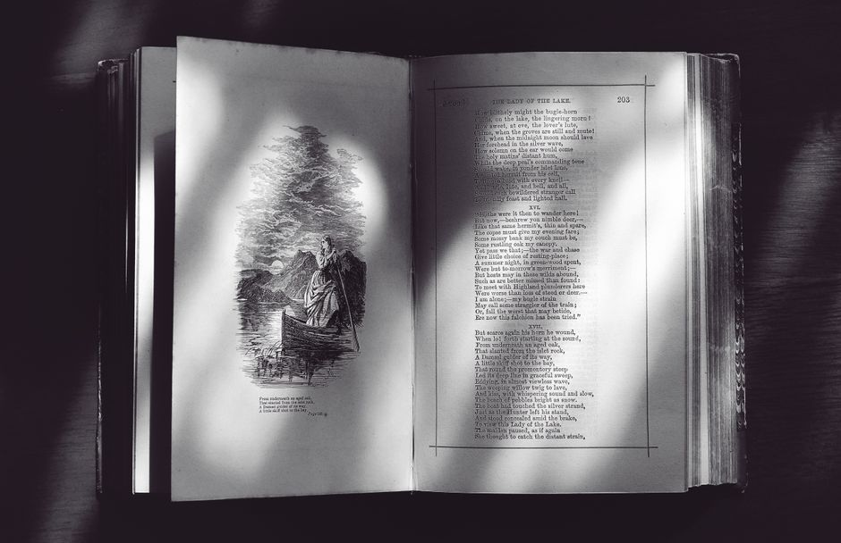

Optical Character Recognition: From Pipelines to Deep Nets
OCR looks solved because it works on receipts and scanned books, but understanding why the classical pipeline struggled explains exactly what deep learning fixed and what it did not.

Why OCR is a good lens on the whole field
Optical character recognition is one of those problems that feels finished the moment you see it work on a clean scanned page, and feels completely unsolved the moment you point a phone camera at a crumpled receipt in bad light. That gap between the demo and the deployment is instructive, because it maps almost exactly onto the difference between the classical pipeline approach and the end-to-end deep learning approach that replaced most of it. If you understand why the classical pipeline broke, you understand a lot about why deep learning became the default tool for structured perception problems generally, not just text.
The classical OCR pipeline was, in essence, an assembly line. You took an image, cleaned it up, found the text regions, cut them into individual characters, and classified each character in isolation before stitching the results back into words with a language model. Every stage was a separate module built and tuned by a different set of heuristics, and every stage could fail independently. That modularity was actually the whole point at the time: it let engineers reason about each component, debug it in isolation, and swap in improvements without retraining everything. It is also precisely what deep learning eventually dismantled, and worth walking through in detail before saying why.
Inside the classical pipeline, stage by stage
Preprocessing came first: binarisation to turn a greyscale image into black and white, deskewing to straighten rotated text, and noise removal to strip out scanner artefacts or paper texture. A common technique was Otsu's method for picking a threshold that separates foreground ink from background paper, which works nicely on a clean scan with even lighting and fails badly the moment lighting is uneven, because a single global threshold cannot cope with a page that is brighter on one side than the other.
Next came segmentation: finding lines, then words, then individual characters, usually by looking for gaps in the vertical projection of dark pixels. This is where the classical approach really showed its age. Segmentation assumes characters are separable by whitespace, which is a reasonable assumption for typewritten Latin script with consistent spacing, and a terrible assumption for cursive handwriting, touching characters, or scripts like Arabic where letterforms change shape depending on their neighbours. A single misplaced cut here would doom every later stage, because you cannot classify a character you have already sliced in half.
Feature extraction and classification followed: each segmented glyph was reduced to a fixed set of handcrafted features, things like stroke density in different regions of the box, aspect ratio, or the count of loops and endpoints, and these features fed a classifier such as a support vector machine or a simple neural network. Consider a worked example: the letters 'rn' sitting close together can be misread as 'm' by a segmentation step that merges them into one box, and no amount of clever feature engineering downstream fixes that, because the damage happened before classification ever saw the input. Finally, a language model or dictionary lookup corrected obvious errors, turning 'the caf' followed by a garbled fragment into 'the cafe', but this was a patch applied after the fact rather than a genuine fix.
What deep learning actually changed
The key shift was not that neural networks classify characters more accurately than support vector machines, though they generally do. The key shift was that deep learning made it possible to stop segmenting characters at all. Architectures combining convolutional feature extraction with recurrent layers, trained with a connectionist temporal classification loss, take a whole line of text as input and output a sequence of characters directly, without ever committing to a hard boundary between one glyph and the next. The model learns to align its output sequence to the input image implicitly during training, which means the 'rn' versus 'm' ambiguity becomes a soft decision the network can weigh using context from the whole line, rather than an irreversible cut made in isolation at preprocessing time.
This matters enormously in practice because it removes an entire class of unrecoverable errors. In the classical pipeline, a segmentation mistake was final; in a CTC-based or attention-based recogniser, the same visual ambiguity is just one hypothesis among several that the model can revise using surrounding characters and, in more recent transformer-based approaches, using broader context still. The preprocessing stage did not disappear either, images are still normalised and resized, but the brittle, hand-tuned binarisation and cutting logic was absorbed into learned convolutional filters that adapt to lighting and script variation because they were trained on thousands of examples of exactly that variation, rather than assuming a single global threshold will always work.
It is worth being honest about what did not change. Deep learning models still need representative training data, and an OCR system trained mostly on clean printed Latin text will still degrade on handwriting, low-resolution photographs, or scripts it rarely saw during training, just as the classical pipeline did, only the failure now shows up as a confidently wrong prediction rather than an obviously broken segmentation. This is an important evaluation point: because the end-to-end model hides its internal stages, it is harder to diagnose exactly where a failure originated, and practitioners lose some of the debuggability that the modular classical pipeline offered almost for free.
A practical takeaway
If you are building or evaluating an OCR system today, the lesson from this history is not simply that deep learning wins, it is that the biggest gains came from removing an early, irreversible commitment point in the pipeline rather than from a better classifier at the end. That principle generalises well beyond text recognition: whenever a pipeline forces a hard decision early that later stages cannot revisit, that decision point is worth scrutinising as a likely source of unrecoverable error, and worth replacing with something that can be learned or kept soft. When you evaluate a modern OCR system, test it on the messy inputs it will actually see, skewed photos, mixed fonts, low light, not just clean scans, because that gap between clean and real conditions is exactly where the old pipeline's assumptions used to break, and where a poorly trained model will quietly break in a new way today.
